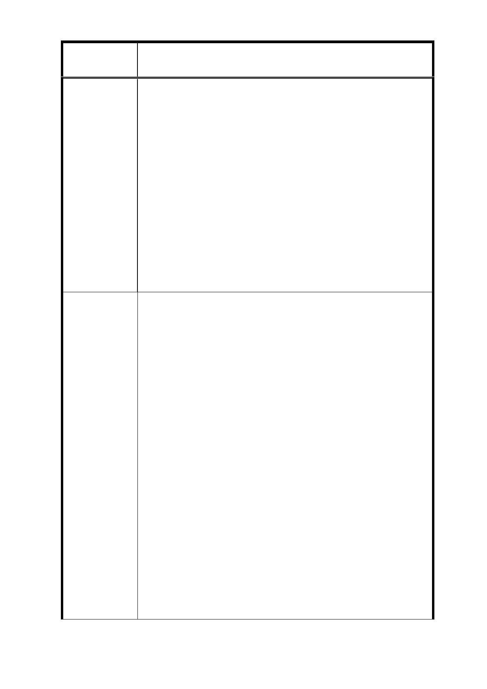

案
名
修訂臺北市信義計畫特定專用區細部計畫(第三次
通盤檢討)案（第二次公告公開展覽）
降低最小基地規模，則陳述人基於同樣利用土地之
需求，亦請貴府考量信義計畫區發展目標、街廓條
件、公平原則等，依法而為相同處理。
五、 綜上所述，陳述人一直以來均配合信義計畫地區都市
計畫內容而亟欲開發本土地，然礙於歷次通盤檢討內
容均未顧及本土地開發主、客觀條件，實難以整合致
迄今仍無法開發，然貴府於本次通盤檢討竟又增加前
揭限制，恣意擴大信義計畫地區之商業範圍、獨厚 B7
街廓而嚴重侵害陳述人之權益，顯非合法妥適。準
此，陳述人謹依都市計畫法第 19 條規定陳述意見如
上，懇請 貴府參酌，無任感禱！
陳述意見人：
邱裕惠 高娉婷 蔡麗紅 鄧國士 張小慧 高子偉 邱耀正
1. 考量特定業務區係屬商業區，為符合本次通盤檢討鼓
勵商業發展之目的，新增限制建築物 1-2 樓，或有申
請容移容獎者 1-4 樓須為商業使用，以延續地面層商
業活動，惟經 104 年 3 月 5 日第 668 次本市都委會審
議，委員考量信義線已通車，另從信義計畫區商業金
融中心之定位，希望信義路沿線以商業發展為主，故
仍建議維持住宅比例之限制。
2. 本次修訂 B7 街廓部分基地(信義區信義段三小段 52-4
〜52-8、52-10〜52-12 地號土地)之基地建築最小面積
建議辦法
係考量該部分係屬信義計畫區辦理市地重劃配地時，
區內小地主集中分配之土地，同街廓內其他面積較大
之土地皆已整合完成，唯獨該部分土地因地籍較為零
碎，且目前土地所有權人總數高達 42 位，整合至 3000
平方公尺恐上有困難，故將最小基地開發規模由 3000
平方公尺調整為 1000 平方公尺。
3. D1 街廓土地雖同屬地籍較為零碎地區，惟查該街廓內
信義區信義段五小段 39、39-1〜39-4、39-11、39-12、
39-14〜39-16 等 10 筆地號土地業已整合完成，並經本
市都市設計及土地開發許可審議委員會審議通過在
案，其餘尚未開發土地僅有同小段 39-5 地號土地面積
35